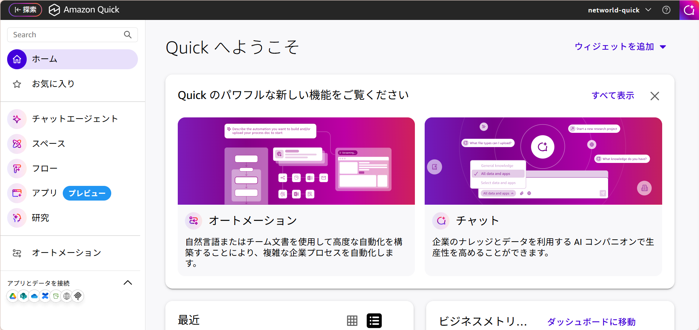
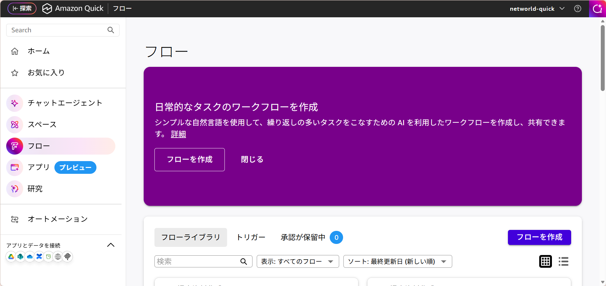
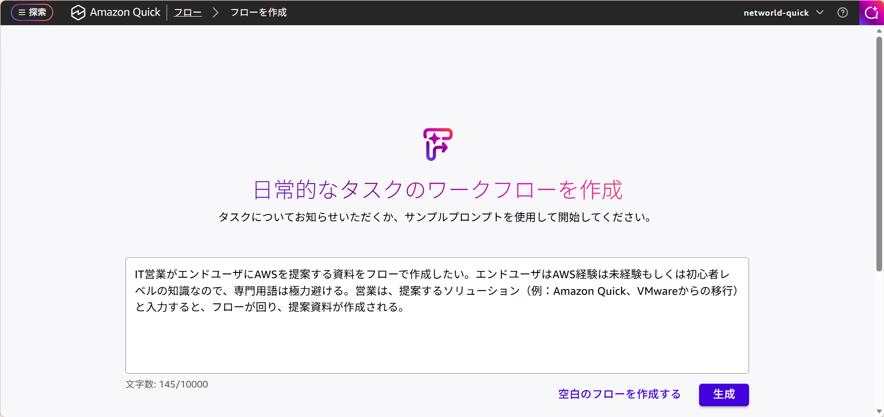
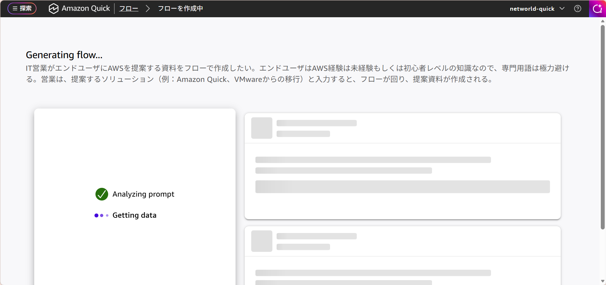
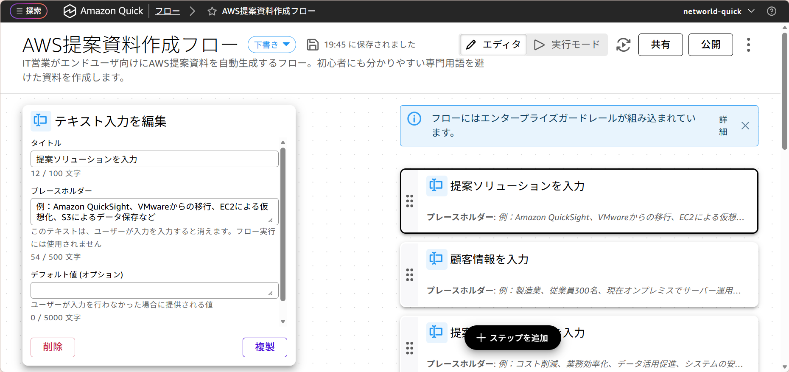
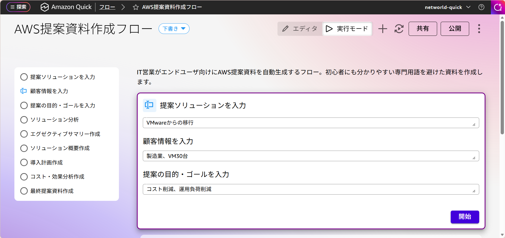
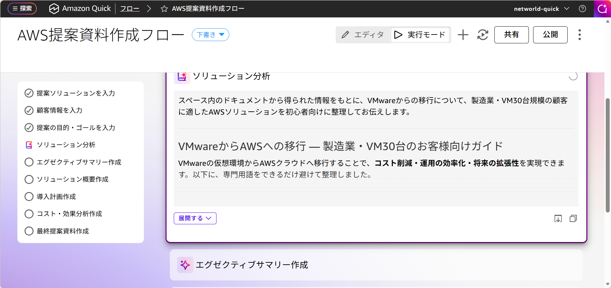

第1部 ・ 講師と一緒
IT 営業がエンドユーザー向けの AWS 提案資料を作るフローを構築し、ソリューションと顧客情報を入力するだけで資料が完成する流れを体験します。
ハンズオンを始める所要時間：約 15 分
Amazon Quick の「フロー」機能を使って、IT 営業がエンドユーザー向けの AWS 提案資料を作成する仕組みを構築します。一度フローを作っておけば、提案するソリューションと顧客情報を入力するだけで、専門用語を抑えたわかりやすい提案資料が自動で完成します。営業の提案準備にかかる手間を大きく減らせるのがポイントです。
左メニューから「フロー」を選択します。

「フローを作成」をクリックします。

以下のプロンプトを入力欄に貼り付けた後に、「生成」をクリックします。
IT営業がエンドユーザにAWSを提案する資料をフローで作成したい。エンドユーザはAWS経験は未経験もしくは初心者レベルの知識なので、専門用語は極力避ける。営業は、提案するソリューション（例：Amazon Quick、VMwareからの移行）と入力すると、フローが回り、提案資料が作成される。
フローが作成されます。

画面右上の「実行モード」をクリックします。

「提案ソリューション名」と「顧客情報」、「提案の目的・ゴールを入力」がそれぞれ分かれて表示されます。各欄に以下をコピーして入力してください。その後、「開始」をクリックします。

フローが流れて提案資料が作成されます。
